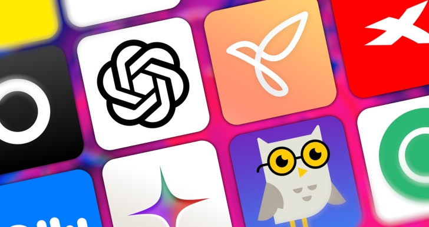

Plataformas de IA aplicada al Desarrollo de Software

Las plataformas de Inteligencia Artificial (IA) están transformando el desarrollo de software al automatizar tareas repetitivas, mejorar la calidad y seguridad del código, y acelerar el ciclo de vida de desarrollo. Estas herramientas actúan como asistentes de codificación inteligentes, optimizando el trabajo de los desarrolladores.
Plataformas y Herramientas Destacadas en el Desarrollo de Software
- GitHub Copilot (Microsoft): Considerada la herramienta de IA más utilizada para programar, funciona como un asistente de codificación que sugiere líneas o funciones completas en tiempo real directamente en el editor de código.
- Amazon CodeWhisperer: Un asistente de codificación similar a Copilot, que también proporciona sugerencias de código y se integra bien con los servicios de AWS.
- ChatGPT/Modelos de Lenguaje (OpenAI): Utilizado como asistente para generar fragmentos de código, resolver problemas de lógica, depurar y aportar ideas para proyectos.
- Tabnine: Una herramienta de autocompletado de código impulsada por IA que ofrece sugerencias personalizadas y ayuda a acelerar la codificación.
- DeepCode (ahora parte de Snyk): Utiliza IA para analizar el código en busca de errores, vulnerabilidades de seguridad y malas prácticas, proporcionando recomendaciones precisas para mejorar la calidad del software.
- CodeT5 (SalesForce): Basado en modelos Transformer, esta herramienta genera código automáticamente, traduce entre diferentes lenguajes de programación y detecta errores.
- DeepSource: Una plataforma que realiza análisis exhaustivos del código para identificar vulnerabilidades, errores y problemas de rendimiento, ayudando a mantener un alto nivel de calidad.
- Plataformas en la nube (Google Cloud AI, Microsoft Azure AI, AWS AI): Ofrecen conjuntos integrados de tecnologías y herramientas para que los desarrolladores creen, prueben, implementen y actualicen sus propios modelos de aprendizaje automático y aplicaciones de IA dentro de sus ecosistemas.
Aplicaciones Clave en el Desarrollo de Software
- Generación y Autocompletado de Código: Las herramientas de IA generativa pueden predecir y sugerir código, automatizando tareas repetitivas y permitiendo a los desarrolladores centrarse en problemas más complejos.
- Pruebas y Depuración: La IA automatiza la generación y ejecución de casos de prueba, analiza el código para detectar errores en etapas tempranas y optimiza la cobertura de pruebas, reduciendo el tiempo de pruebas manuales.
- Revisión y Calidad del Código: Las herramientas de IA analizan el código para identificar patrones de errores comunes, malas prácticas y posibles problemas de rendimiento, ofreciendo sugerencias de optimización.
- Traducción de Código: Algunas plataformas pueden traducir código automáticamente entre diferentes lenguajes de programación.